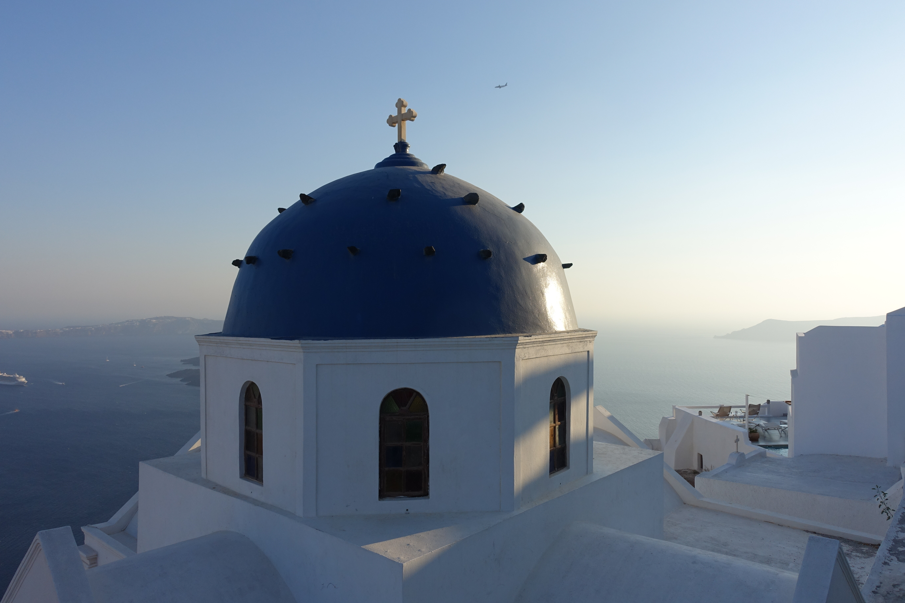
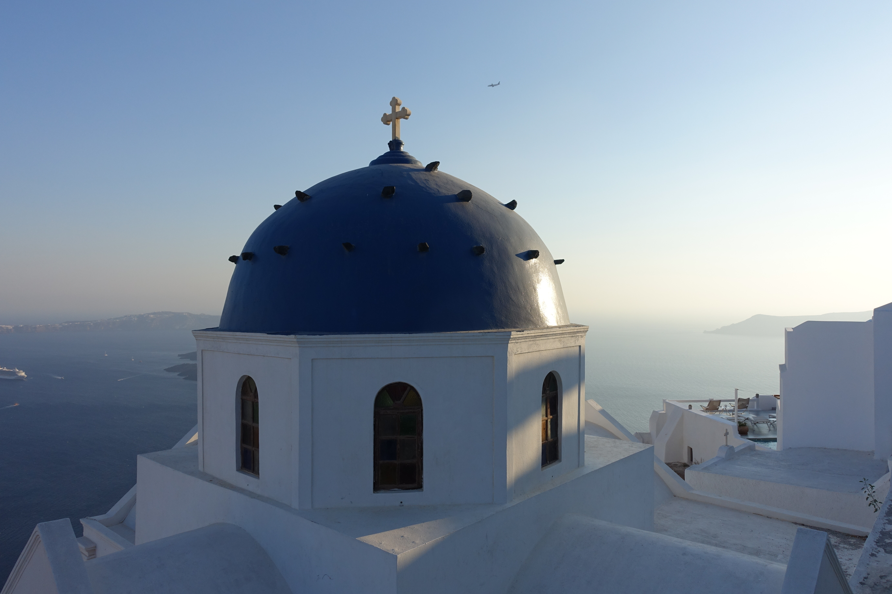
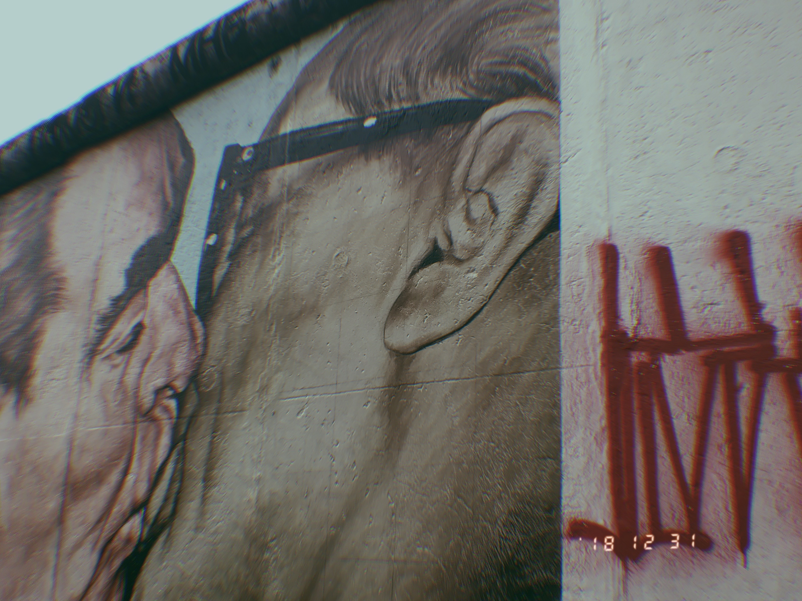
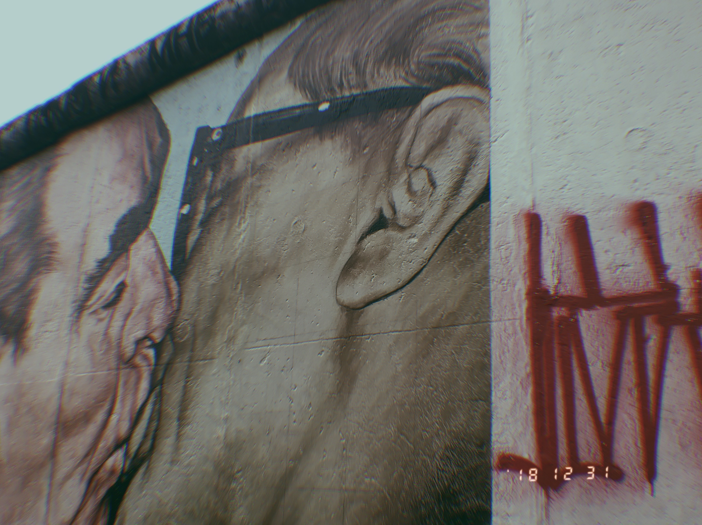
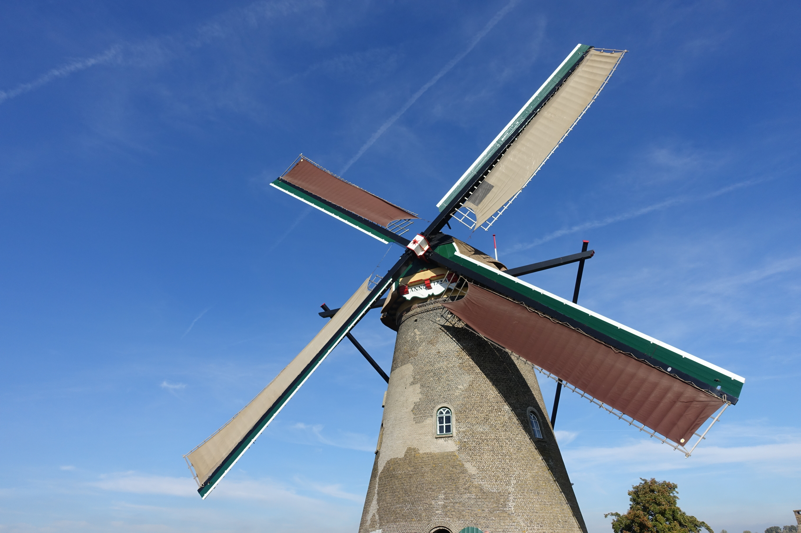
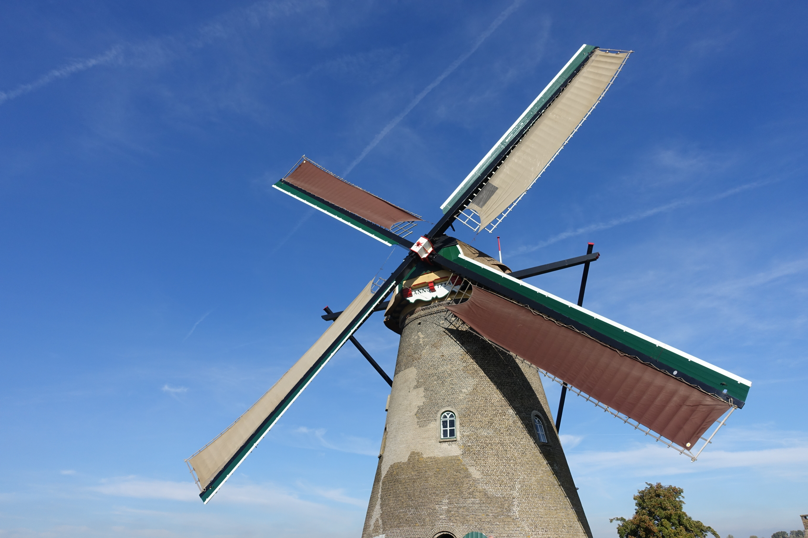

Adventure.
I love to travel, see new places, meet new people,
and definitely --
taste the cuisine and eat all the local foods!
fun facts about me: I have been to more than 20 countries in the past 10 years!
 


 


 
